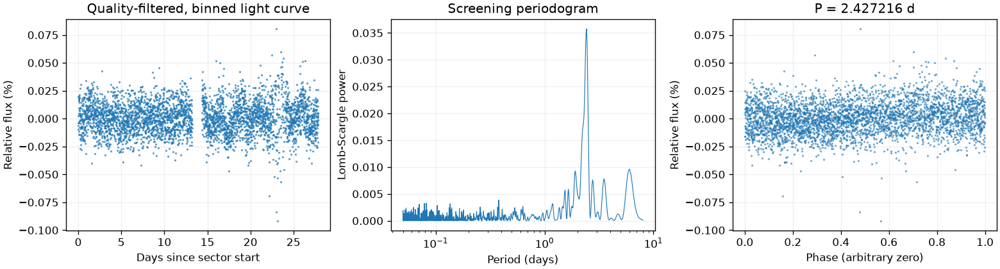
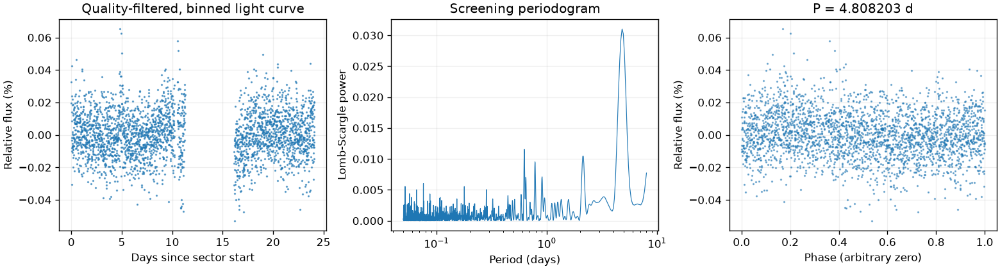
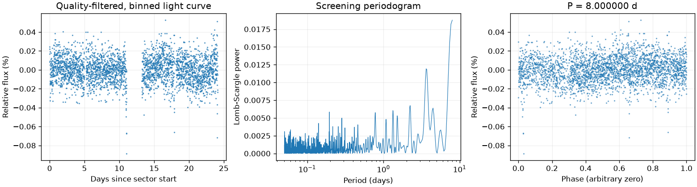

Sector 1 · LS 2.427216 天
BLS 辅助周期：2.374945 天
两种搜索周期不同，尚未自动决定采用哪一个。
前半段 LS：2.629657 天；后半段 LS：2.375860 天。
相对幅度估计 0.0108% · 有效点数 18271

Screening peak only; no correlated-noise false-alarm calibration or physical classification.
这是筛选报告，未确认新发现，也不能代替 VSX 提交材料。
图中依次为亮度随时间变化、候选周期强度和折叠后的重复形状。相位零点仅供展示；纵轴是相对通量，不是标定星等。
BLS 辅助周期：2.374945 天
两种搜索周期不同，尚未自动决定采用哪一个。
前半段 LS：2.629657 天；后半段 LS：2.375860 天。
相对幅度估计 0.0108% · 有效点数 18271

Screening peak only; no correlated-noise false-alarm calibration or physical classification.
BLS 辅助周期：0.644776 天
两种搜索周期不同，尚未自动决定采用哪一个。
前半段 LS：4.448218 天；后半段 LS：5.810861 天。
相对幅度估计 0.0105% · 有效点数 13645

Screening peak only; no correlated-noise false-alarm calibration or physical classification.
BLS 辅助周期：6.828006 天
最强峰位于搜索边界，尚未测得有界周期。 两种搜索周期不同，尚未自动决定采用哪一个。
前半段 LS：0.768316 天；后半段 LS：8.000000 天。
相对幅度估计 0.0107% · 有效点数 15381

Screening peak only; no correlated-noise false-alarm calibration or physical classification. Strongest peak is at the search boundary; repetition does not establish a bounded period.
{
"ra_deg": 66.4410365773749,
"dec_deg": -69.9936843923982,
"catalog_queries": [
{
"source": "VSX",
"checked_at": "2026-11-10T08:37:51.458468+00:00",
"url": "https://vsx.aavso.org/index.php",
"query": {
"params": {
"view": "api.list",
"ra": 66.4410365773749,
"dec": -69.9936843923982,
"radius": 0.04,
"format": "json"
}
},
"status": "completed",
"match_count": 1,
"note": "VSX neighborhood only; no-match is not novelty confirmation."
},
{
"source": "SIMBAD/VizieR/ADS",
"status": "not_run",
"note": "Requires detailed catalog/literature review; VSX alone is insufficient."
}
],
"vsx_neighbors": [
{
"Name": "Gaia DR3 4655882743731780864",
"RA2000": "66.38278",
"Declination2000": "-69.98322",
"ProperMotionRA": "2.7020",
"ProperMotionDec": "-0.5230",
"VariabilityType": "RRAB",
"Period": "0.38768",
"MaxMag": "18.91 G",
"MinMag": "19.58 G",
"Discoverer": "Gaia collaboration",
"Category": "Variable",
"OID": "2994848",
"Constellation": "Hyi",
"sep_arcsec": 81.055644030396
}
],
"notes": [],
"errors": [],
"repeatability": {
"status": "boundary_limited",
"fractional_spread": 1.1590161190424617,
"tolerance": 0.05,
"note": "At least one strongest peak is at a search boundary; do not promote shared bounds as periodic evidence."
},
"localization": null,
"submission": {
"name": null,
"ra_deg": null,
"dec_deg": null,
"coordinate_source": null,
"coordinate_epoch": null,
"variability_type": null,
"period_days": null,
"period_error_days": null,
"epoch": null,
"epoch_time_standard": null,
"epoch_event": null,
"max_magnitude": null,
"min_magnitude": null,
"passband": null,
"magnitude_source": null,
"mean_magnitude": null,
"amplitude_magnitude": null,
"amplitude_passband": null,
"discoverers": null,
"references": null
}
}